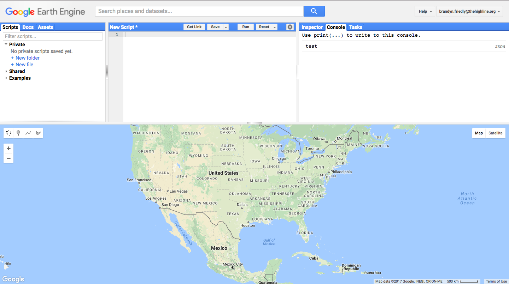

New Year's Resolutions:
Working w/Satellite Data
January 24th, 2017
Geographic Data 101
2 Types:
- Vector
- Raster
Vector
Common Vector Data Formats
- GeoJSON
- Shapefile
Vector Example
Raster
- Rows and columns of cells (or pixels) create a grid of data
- Cells hold values (temperature, elevation, red/green/blue color)
- Grids organized into bands (channels) that can overlay multiple different types of values
- Size of each cell makes the dataset's resolution
Common Raster Data Formats
- GeoTiff
- ...?
Digital Elevation Model
Temperature Data
Landsat
- Joint effort by NASA and USGS
- Conceived in 1965
- Landsat 1 Launched 1972
- Public Earth science datasets for 44+ years!
Landsat Mission
“Landsat 9 [will] propel the program past 50 years of collecting global land cover data,” said Jeffrey Masek... “That’s the hallmark of Landsat: the longer the satellites view the Earth, the more phenomena you can observe and understand.”
Landsat8
- Launched February 11, 2013
- 11 bands
- Each band from a different part of the electromagnetic spectrum
- Visible spectrum < half of Landsat's data
- Surveys entire Earth every ~16 days
- Most bands are 30m resolution, Thermal-Infrared (bands 10,11) 100m resolution
Google Earth Engine
- "Platform for planetary-scale environmental data analysis."
- "May only be used for development, research, or educational purposes."
- Includes a codepen-like script editor (Python or JS) for easily accessing Earth satellite datasets and the processing power of Google's cloud resources
Getting Started with Earth Engine
- Sign Up for Earth Engine Developer Account (takes a few days)
- Once you have an account, all the code that follows is meant to be entered in the Earth Engine Code Editor 
Adding Data
Use this Google data catalog to browse available datasets
In EE code editor, add the dataset to the map document:
/* 1. Add satellite data to map */
Map.addLayer(
// add collection of raw Landsat8 data
ee.ImageCollection('LANDSAT/LC8_L1T')
);
Zoom to Location
(below previous code in EE code editor)
/* 2. Center map on Indian Point (longitude, latitude, zoom) */
Map.setCenter(-73.954661, 41.269739, 15);